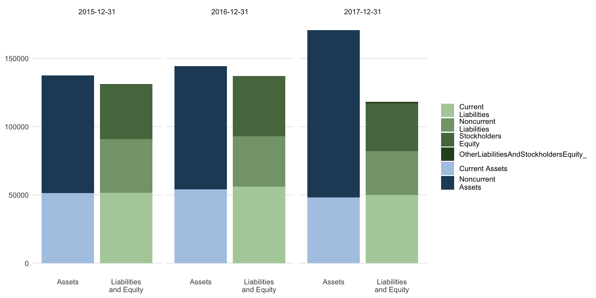
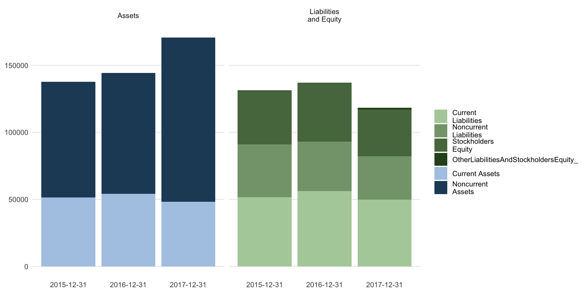
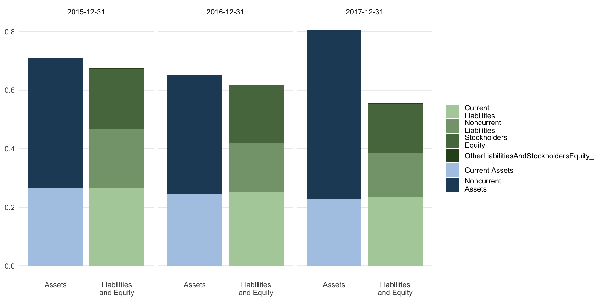
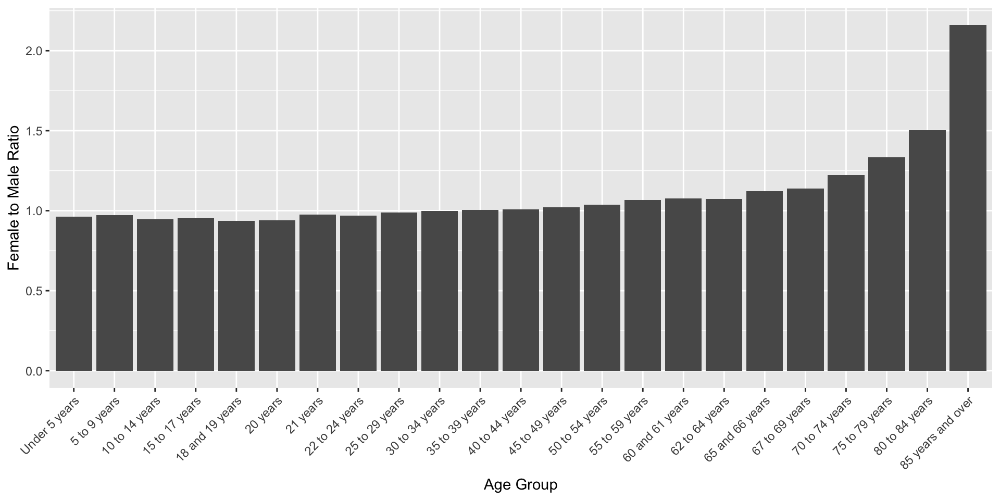
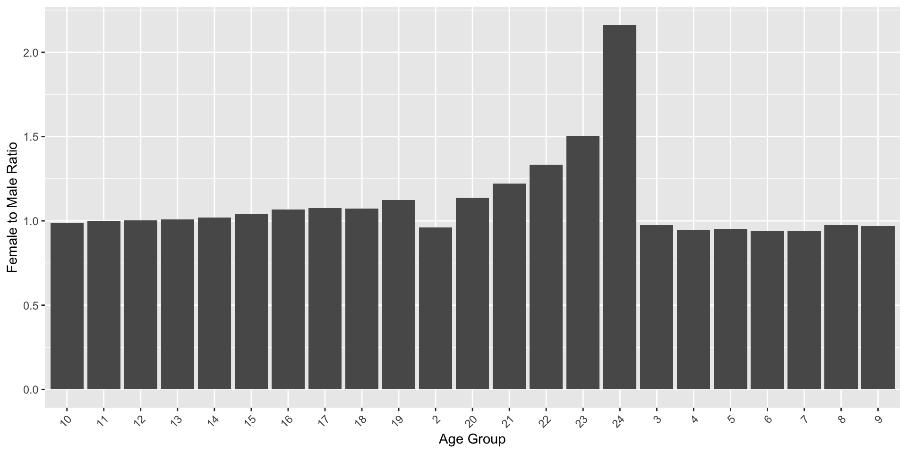

pacman::p_load(edgar, tidyverse, kableExtra)
cik.no = 0001318605 # Tesla
form.type = "10-K" # 10-K is the annual report
filing.year = 2018 # 2018 is the year of the report
quarter = c(1,2,3,4) # All quarters
useragent = "matsuura@fc.ritsumei.ac.jp"外国書購読 Day6
Chapter 5.
Analytical Review: Technical Analysis
Soichi Matsuura
2024-11-13
Analytical Review
Analytical Procedures
- Analytical procedures (分析的手続) 1 are evaluations of financial information made by a study of plausible relationships between both financial and non-financial data.
- Analytical procedures are used in all stages of the audit including planning, substantive testing (実証手続) 2, and final review.
- It serves as a vital planning function in the entirety of the audit procedures.
Analytical Review Procedures
- Analytical review procedures are applied at several points in a firm’s audit to establish “plausible relationships among both financial and non-financial data” as a cost-effective test of the conclusions derived from fieldwork.
- These procedures compare financial and organization information of an audit client such as budgets, industry news, forecasts, market information, non-financial information, bank and tax information.
- Their goal is to flag “exceptional” situations that would require more extensive auditing, and commensurately expand the scope of auditing for these accounts.
Assisting in Audit Planning
- Prior to interim and substantive fieldwork, they play an essential role in assisting the auditor to “adequately plan work” and “obtain a sufficient understanding of the entity and its environment.”
- Prior to fieldwork, auditors have very little access to client transactions (which may not have yet occurred) and analytical procedures based on industry and economy-wide news offer cost-effective tools for audit planning.
Audit engagement
- The auditor’s “analytical review of significant ratios and trends” relies on historical ratios which provide the basis for assessing risk and planning the audit (AICPA, 1988).
- AICPA statement AU Section 329 states that analytical procedures are used throughout the audit engagement - in audit planning, execution, and review - and specifically at three times during the audit:
Three Times During the Audit
- To assist in planning the nature, timing, and extent of other auditing procedures;
- As a substantive test to obtain audit evidence about assertions related to account balances or classes of transactions
- As an overall review of the financial information in the final review stage of the audit.
The AICPA couches its pronouncements on analytical procedures in the language of statistics, borrowing statistical terms such as “precision” (精度), “likelihood” (尤度), and “expectation” (期待値) in describing analytical tests.
Audit Technologies
- Audit technologies now use objective statistical methods to support or replace auditor judgment, making audits more cost-effective and reducing the risk of errors.
- The modern audit approach relies on assumptions about data distributions to guide audit decisions.
- Audits may not fully use statistical methods because financial data distributions can be complex.
- Empirical Research shows that financial data distributions vary widely between different firms and accounts.
Institutional Context of Analytical Review
AICPA Definition
- The AICPA defines analytical review procedures to “…consist of evaluations of financial information made by a study of plausible relationships among both financial and non-financial data.”
- Analytical procedures are used in planning the audit; as a substantive test to obtain audit evidence about assertions related to account balances or classes of transactions.
- The AICPA emphasizes that “… in some cases, analytical procedures can be more effective or efficient than tests of details for achieving particular substantive testing objectives”.
AICPA Guidelines
- The AICPA’s guidelines on analytical review aim to help audits identify major errors in financial statements.
- Analytical review procedures use external information available during audit planning.
- Analytical review includes any audit methods, qualitative or quantitative, that aren’t directly related to testing the client’s transactions or balances during control and substantive testing.
- Analytical procedures compare recorded amounts or ratios with expectations set by the auditor.
The nature of analytical review
- Official pronouncements of the AICPA on the nature and objectives of analytical review support theoverall objectives of an audit: discovery of material errors in the financial statements.
- Analytical review procedures flexibly and opportunistically rely on external information available at the time of planning the audit; they depend heavily on non-transaction data sources, and typically need to make explicit or implicit assumptions about the underlying statistical characteristics of such data and its relevance to the financial statements to be audited.
AICPA
According to the AICPA:
“The auditor develops such expectations by identifying and using plausible relationships that are reasonably expected to exist based on the auditor’s understanding of the client. The expected effectiveness and efficiency of an analytical procedure in identifying potential misstatements depends on, among other things, the precision of the expectation. The expectation should be precise enough to provide the desired level of assurance that differences that may be potential material misstatements, individually or when aggregated with other misstatements, would be identified for the auditor to investigate. As expectations become more precise, the range of expected differences becomes narrower and, accordingly, the likelihood increases that significant differences from the expectations are due to misstatements. Expectations developed at a detailed level generally have a greater chance of detecting misstatement of a given amount than do broad comparisons. Monthly amounts will generally be more effective than annual amounts and comparisons by location or line of business usually will be more effective than company-wide comparisons.”
Sufficiency Competent Evidence
- Analytical review procedures have been in use at least since the 1940s, and were introduced into the authoritative auditing literature in 1970 with the promulgation (公布) of Statement on Auditing Procedures (SAP) No. 54 (AU section 320.70).
- This Statement specified that sufficient competent evidential matter (十分にして適格な証拠) “is obtained through two general classes of auditing procedures:
- Tests of details of transactions and balances (詳細テスト)
- Analytical review of significant ratios and trends. (分析的実証手続)”
- Statistical terms such as “precision,” “likelihood,” and “expectation” in the audit context are presented but not further defined in the AICPA’s pronouncements.
- But statistical tests commonly used by auditors do provide specific and practical definitions of these terms.
- Additionally, “assurance” as used in the context of analytical review for substantive tests has been linked in SAS 56 to the “statistical confidence” that the auditor has in his or her tests.
Related Research
- Over the last half century, research in many areas has expanded the statistical toolset available to auditors for analytical procedures.
- Research assessing account values and transaction flows using statistical time-series methods appear.
- The practical application of various judgmental or hybrid approaches has been investigated through an equally rich stream of behavioral audit decision research.
- Statistical approaches have been augmented with computationally intensive machine learning approaches and this is currently an active area of development in the audit industry.
- During the planning stage, the analytical review procedure enhances the auditor’s understanding of the client’s business and helps in identifying significant transactions and events that have occurred since the last audit date.
- It also identifies unusual transactions and events, amounts, ratios, or trends that might be significant to the financial statements and may represent specific risks relevant to the audit.
- Risk assessment procedures require understanding the entity and its environment.
Planning Stage
- The whole process assists the auditor in planning the nature, extent and timing of other auditing procedures.
- Measuring risks to identify significant areas requiring the auditor’s attention is also covered here.
- Results of the analytical procedures performed during the planning stage help identify risks that may, based on the auditor’s judgment, require special audit consideration.
- Examples of these are those that are considered as non-routine, unusual and complex transactions, business risks that may result in material misstatement, fraud risk, significant related party transactions, accounting estimates and principles.
Analytical procedures include the review of data aggregated at high levels, such as comparing financial statements to budgeted or anticipated results. Generally, financial data are used, but relevant non-financial data (e.g., number of employees, square footage of selling space, or volume of good produced) may also be considered.
Analytical review procedures typically include a review of the current and prior year’s financial statements and the current year’s budget. Comparisons are made between the current year’s actual and budgeted financial statements. There must also be an analysis to compare the current and previous year’s actual financial statements to test for internal consistency.
Expectations
- Auditors must develop independent expectations for comparison to recorded amounts.
- Examples of these expectations include financial information for comparable prior periods, anticipated results from budgets and forecasts, relationship among data within the current period, industry norms and relationships of financial data with non-financial information.
- Income statement accounts have more predictable relationships compared to balance sheet accounts.
- In addition, accounts based on management discretion such as bonus, other employee benefits, and other related expenses are less predictable.
In performing analytical procedures, the auditor may also use financial analysis ratios which may be classified as liquidity ratios, activity ratios, profitability ratios, investors ratios, and long-term debt paying ability ratios.
Additional analyses, such as common size analysis (vertical and horizontal), analysis of industry statistics, and trend analysis, may also be valuable depending on the nature of transactions.
Recent years have seen an increased emphasis on the use of analytical procedures, as it helps identify significant audit risks without relying on the client’s own attestations.
However, analytical review comparisons are based on expected plausible relationships among data.
Limitations
- Limitations exist in the use of analytical procedures because differences noted do not necessarily indicate errors or fraud, but simply the need for further analysis and investigation—specifically of the client’s own documentation, as well as entities doing business with the client.
- Changes in an account and in accounting principles, and inherent differences between industry norms and the client all contribute to fluctuations in expected amounts.
- Hence, the auditor needs to exercise professional judgment in analyzing the results.
- Analytical procedures are usually designed to point out audit areas that are indicative of potential risks, need special emphasis or additional attention. Thus there are a number of practical guidelines that should dictate their application:
- Avoid mechanical computations and comparisons. Instead, determine trends, ratios, and relationships that are most relevant to the business. Develop expectations on plausible or predictable relationships based on historical patterns in the operation of the business. These will serve as benchmarks for comparisons to determine unusual or unexpected changes.
- Unusual or unexpected relationships would be characterized by anything out-of-the-ordinary or those that do not make sense or at odds with comparable industry data
- For nonprofit organizations, analytical procedures should lead to information regarding changes in programs, nature of activities, grantors, fund-raising events, political environment, and the impact of the economy in the collection of promises to give.
Some of the typical analytical procedures applied are:
- Compare receipts from annual fund-raising drives to total support. This can help spot issues with revenue recognition.
- Compare support and revenue sources over the past 5 years. This may reveal revenue sources that need closer review.
- Evaluate the ratio of fund-raising expenses to contribution revenue. A low expense compared to recorded revenue might indicate overstated revenue. Little or no fund-raising expense alongside contribution revenue might suggest underreported expenses to keep expense ratios favorable.
- Scan financial information for unusual changes, unexpected patterns, or major fluctuations that might highlight areas with a higher risk of error. For instance, a big increase in notes payable could suggest new loans, while significant shifts in total net assets or in different asset classes (unrestricted, temporarily restricted, permanently restricted) may indicate negative trends or concerns about the organization’s viability.
- Obtaining information information from prior audits. This enables the auditor to make preliminary judgments about the inherent and control risks about material accounts and to focus on substantive procedures to reduce the detection risk.
Technical Measures of a Company’s Financial Health
Technical Metrics
- Analytical review uses both internal and external data sources.
- Many methods exist for gathering firm intelligence, reflecting the growth of online financial analysis resources.
- Internal metrics like accounting equations and ratios were traditionally key for spotting irregularities, risks, and weaknesses.
- In the past decade, websites, forums, social media, and databases provide richer insights than basic ratios.
- Financial analysts now monitor online sources, offering real-time firm health assessments beyond traditional, retrospective accounting metrics.
Fundamental Equations
Introduced algebra to accounting leading to the three fundamental equations:
- The Bookkeeping equation (double-entry) for error control,
- “Real” accounts (実在勘定) for tracking wealth; this is called the “basic accounting equation.” An elaborate form of this equation is presented in a balance sheet which lists all assets, liabilities, and equity, as well as totals to ensure that it balances, and
- “Nominal” accounts (名目勘定) for tracking activity; closing out these accounts at year-end yields the net income amount, which arguably is the most important single statistic produced in the accounting process from a stockholders perspective.
Technical Metrics
- Technical metrics in analytical review involve an exploration of these fundamental equations and their components, both in current and prior years’ statements and in the context of information obtained from interviews, news, and other sources, with the aim of identifying areas of risk in the current year’s audit.
- Ratio analysis provides one of the specific ways that these relationships may be expanded to compare with other firms in an industry or between accounting periods for the same firm.
- A financial ratio (or accounting ratio) is a relative magnitude of two selected numerical values taken from an enterprise’s financial statements.
Financial Ratios
- Often used in accounting, there are many standard ratios used to try to evaluate the overall financial condition of a corporation or other organization.
- Financial ratios may be used by managers within a firm, by current and potential shareholders (owners) of a firm, and by a firm’s creditors.
- Financial analysts use financial ratios to compare the strengths and weaknesses in various companies.
- If shares in a company are traded in a financial market, the market price of the shares is used in certain financial ratios.
Use of Ratios
- Ratios can be expressed as a decimal value, such as 0.10, or given as an equivalent percent value, such as 10%.
- Some ratios are usually quoted as percentages, especially ratios that are usually or always less than 1, such as earnings yield, while others are usually quoted as decimal numbers, especially ratios that are usually more than 1, such as P/E ratio; these latter are also called multiples.
- The reciprocal expresses the same information, but may be more understandable: for instance, the earnings yield can be compared with bond yields, while the P/E ratio cannot be: for example, a P/E ratio of 20 corresponds to an earnings yield of 5%.
Calculation of Ratios
- Values used in calculating financial ratios are taken from the balance sheet, income statement, statement of cash flows or (sometimes) the statement of retained earnings.
- These comprise the firm’s “accounting statements” or financial statements.
- The statements’ data is based on the accounting method and accounting standards used by the organization.
Purpose and Types of Ratios
Financial ratios quantify many aspects of a business and are an integral part of the financial statement analysis. Financial ratios are categorized according to the financial aspect of the business which the ratio measures:
- Liquidity ratios measure the availability of cash to pay debt.
- Activity ratios measure how quickly a firm converts non-cash assets to cash assets.
- Debt ratios measure the firm’s ability to repay long-term debt.
- Profitability ratios measure the firm’s use of its assets and control of its expenses to generate an acceptable rate of return.
- Market ratios measure investor response to owning a company’s stock and also the cost of issuing stock. These are concerned with the return on investment for shareholders, and with the relationship between return and the value of an investment in company’s shares.
Comparisons of Ratios
Financial ratios allow for comparisons:
- between companies (企業比較)
- between industries (産業比較)
- between different time periods for one company (時点比較)
- between a single company and its industry average (企業と業界平均比較)
Limitations of Ratios
- Ratios generally are not useful unless they are benchmarked against something else, like past performance or another company, or industry averages.
- Thus, the ratios of firms in different industries, which face different risks, capital requirements, and competition are usually hard to compare.
- Financial ratios may not be directly comparable between companies that use different accounting methods or follow various standard accounting practices.
Various Financial Statements
Public Companies: Typically required to use their home country’s Generally Accepted Accounting Principles (GAAP).
Private Entities: May not follow accrual basis accounting; standards vary.
Multi-National Corporations: Often use International Financial Reporting Standards (IFRS) or home country GAAP.
Global Variation: No universal standard for financial statement calculations; terminology and practices differ across companies, industries, and countries.
Other Financial items
Other commonly used terms are:
- COGS = Cost of goods sold or cost of sales (売上原価)
- EBIT = Earnings before interest and taxes (利払前税引前利益)
- EBITDA = Earnings before interest, taxes, depreciation, and amortization (利払前・税引前・減価償却前利益)
- EPS = Earnings per share (一株当り利益)
Common Technical Metrics
負債比率
- Debt-to-equity ratio: compares a company’s total debt to shareholders’ equity. Both of these numbers can be found on a company’s balance sheet. To calculate debt-to-equity ratio, you divide a company’s total liabilities by its shareholder equity, or
- Debt-to-Equity Ratio = Total Liabilities / Shareholders’ Equity .
- If a company has a debt-to-equity ratio of 2 to 1, it means that the company has two dollars of debt to every one dollar shareholders invest in the company.
棚卸資産回転率
- Inventory turnover ratio: Inventory turnover is calculated by dividing a company’s cost of sales by its average inventory.
- To find the average inventory, add the beginning and ending inventory balances from the balance sheet and divide by two.
- This ratio shows how efficiently a company manages its inventory.
- Inventory Turnover Ratio = Cost of Sales / Average Inventory for the Period.
- If a company has an inventory turnover ratio of 2 to 1, it means that the company’s inventory turned over twice in the reporting period.
営業利益率
- Operating margin: compares a company’s operating income to net revenues. Both of these numbers can be found on a company’s income statement. To calculate operating margin, you divide a company’s income from operations (before interest and income tax expenses) by its net revenues, or
- Operating Margin = Income from Operations / Net Revenues.
- Operating margin is usually expressed as a percentage. It shows, for each dollar of sales, what percentage was profit.
PER
- P/E ratio: compares a company’s common stock price with its earnings per share. To calculate a company’s P/E ratio, you divide a company’s stock price by its earnings per share, or
- P/E Ratio = Price per share / Earnings per share.
- If a company’s stock is selling at $20 per share and the company is earning $2 per share, then the company’s P/E Ratio is 10 to 1. The company’s stock is selling at 10 times its earnings.
運転資本
- Working capital: is the money leftover if a company paid its current liabilities (that is, its debts due within 1-year of the date of the balance sheet) from its current assets.
- Working Capital = Current Assets - Current Liabilities
And so forth.
Accessing Financial Information from EDGAR
- The EDGAR database (https://www.sec.gov/edgar/) offers a wealth of financial information on industry competitors, but only if they are publicly traded companies.
- Use package
edgarto extract this information. - Note that the SEC recently started requiring identification before access.
- This is accomplished by the
usernameparameter, which is typically set to your work email.
Tesla’s F/S
getFilings() Function
getFilings() function takes CIKs, form type, filing year, and quarter of the filing as input. It creates new directory ’~/Downloads/Edgar filings_full text’ to store all downloaded filings
getFilingsHTML()function takes CIKs, form type, filing year, and quarter of the filing as input.- The function imports edgar filings downloaded via getFilings function; otherwise, it downloads the filings which are not already been downloaded.
- It then reads the downloaded filing, scraps main body the filing, and save the filing content in
~/Downloads/Edgar filings_HTML viewdirectory in HTML format.
getMasterIndex() Function
This function creates a new directory ’~/Downloads/Master Indexes’ into current working directory to save these Rda Master Index.
Management Discussion creates a new directory with name “~/Downloads/MD&A section text”
getSentimentfunction takes CIK(s), form type(s), and year(s) as input parameters.- The function first imports available downloaded filings in local woking directory ’Edgar filings’ created by
getFilingsfunction; otherwise, it downloads the filings which is not already been downloaded. - It then reads the filings, cleans the filings, and computes the sentiment measures.
- The function returns a dataframe with filing information, and sentiment measures.
Accessing Financial Information from EDGAR
- The EDGAR database offers a wealth of financial information on industry competitors, but only if they are publicly traded companies.
- The subsequent R code extracts information on Tesla Motors from Edgar; this information is then analyzed for sentiment, which is presented as a bar chart.
pacman::p_load(edgar, tidyverse, kableExtra)
cik.no = 0001318605 # Tesla
form.type = "10-K"
filing.year = 2018
quarter = c(1,2,3,4)
getFilings(
cik.no,
form.type,
filing.year,
quarter,
downl.permit = "y"
)
getFilingsHTML(
cik.no = cik.no,
form.type = form.type,
filing.year = filing.year,
quarter = quarter
)
# This function creates a new directory ’~/Downloads/Master Indexes’ into current working directory to save these Rda Master Index.
getMasterIndex(filing.year)
# Management Discussion creates a new directory with name "~/Downloads/MD&A section text"
getMgmtDisc(
cik.no = cik.no,
filing.year = filing.year)
sentiment_analysis <- getSentiment(
cik.no,
form.type,
filing.year) |>
t()
d <- sentiment_analysis
names <- rownames(d)
rownames(d) <- NULL
sentiment_analysis <- cbind(names,d)
colnames(sentiment_analysis) <- c("sentiment","n")
sentiment_analysis <- as.data.frame(
sentiment_analysis[10:nrow(sentiment_analysis),]
)
ggplot(sentiment_analysis, aes(sentiment, n)) +
geom_col() +
theme(axis.text.x = element_text(
angle = 45, hjust = 1)
) + xlab("Sentiment") +
ylab("Frequency expressed in 10-k")Accessing Financial Information from EDGAR (https://www.sec.gov/edgar/) with the finreportr Package
pacman::p_load(finreportr)
# The following commands will directly load EDGAR information into the R workspace for analysis
tesla_co <- CompanyInfo("TSLA")
tesla_ann <- AnnualReports("TSLA")
tesla_inc <- GetIncome("TSLA", 2018)
tesla_bs <- GetBalanceSheet("TSLA", 2018)
tesla_cf <- GetCashFlow("TSLA", 2018)
head(tesla_inc)pacman::p_load_gh("bergant/finstr")
pacman::p_load(tidyverse, edgar, XBRL, kableExtra)
# ローカルに保存しているxbrlファイルを読み込む
old_o <- options(stringsAsFactors = FALSE) # 文字列をファクターとして扱わない
xbrl_data_2016 <- xbrlDoAll("XBRL/gm-20161231.xml")
xbrl_data_2017 <- xbrlDoAll("XBRL/gm-20171231.xml")
options(old_o)
st2016 <- xbrl_get_statements(xbrl_data_2016)
st2017 <- xbrl_get_statements(xbrl_data_2017)
balance_sheet2017 <- st2017$ConsolidatedBalanceSheets
balance_sheet2016 <- st2016$ConsolidatedBalanceSheets
balance_sheet <- merge(balance_sheet2017, balance_sheet2016)Wide to Long Form
- The
finreportrpackage returns a data.frame in “long form.” - Because analysis typically benefits from datasets in “short form” with one row per account,
finreportrdata.frames need to be reshaped. - You melt data so that each row is a unique id-variable combination (i.e., is in “long form”) and then you cast the melted data into any shape you would like. In the next example, we take the Tesla income statement in ‘long form’ that we acquired with the
finreportrpackage and dcast it into a more usable form.
Reshaping the Income Statement
tesla_inc <- GetIncome("TSLA", 2018) |>
rbind(GetIncome("TSLA", 2017)) |>
rbind(GetIncome("TSLA", 2016)) |>
rbind(GetIncome("TSLA", 2015))
head(tesla_inc)
tesla_inc <-tesla_inc |>
filter(month(startDate) == 01 & month(endDate) == 12) |>
mutate(Year = year(endDate)) |>
group_by(Metric, Year) |>
slice(1L) |>
dcast(Metric ~ Year, value.var = ’Amount’)
head(tesla_inc)Computing Technical Metrics
- In the prior section, I showed you how to acquire financial information from the SEC’s repositories.
- This section provides general guidelines for computing technical metrics such as ratios from that statement data.
- Consider the calculation of the current ratio (流動比率) which is defined as:
Current Ratio = \frac{Current Assets}{Current Liabilities}
calculate current ratio
date CurrentRatio
1 2015-12-31 0.9745988
3 2016-12-31 0.8946009
4 2017-12-31 0.8940564- Other ratios may be calculated in a similar straightforward manner using the dplyr package in the tidyverse library.
- Note that several other packages (e.g.,
edgar,finreportr) are available to extract EDGAR filings. - The
finstrpackage can only process links to XBRL files, butfinreportrcan access data from both HTML and XBRL files.
Visualization of Technical Metrics
- Visualizations are compact, yet can reveal patterns that would not be readily identified in the raw data.
- This is because the human brain is much more attuned to analyzing visual scenes than to analyzing lists of numbers and characters.
- Visualizing financial statements exposes a limited number of key values, and emphasizes their relationships and trends.
- In the following code chunk, I aggregate a balance sheet by selected concepts (Table 1).
Aggregate the balance sheet
library(htmlTable)
bs_simple <- expose(
balance_sheet,
# Assets
"Current Assets" = "AssetsCurrent",
"Noncurrent Assets" = other("Assets"),
# Liabilites and equity
"Current Liabilities" = "LiabilitiesCurrent",
"Noncurrent Liabilities" = other(c("Liabilities", "CommitmentsAndContingencies")),
"Stockholders Equity" = "StockholdersEquity"
)Print B/S
Print the balance sheet; capture the output to a NULL file, and reformat with the kableExtra package
Print B/S
plot the balance sheet
facet balance sheet DR and CR accounts
use proportional form to highlight changes in balance sheet structure
Internet Resources for Analytical Review
Web-Accessible Financial and Firm Data
- The exponential growth of web-accessible financial and firm data has revolutionized analytical review over the past decade.
- Intelligence scanning of Internet resources is the automated search for financial information, inventory sentiment, discussions, news, and other audit related information.
- It has eclipsed calculation of technical metrics as a source of internal control weaknesses, accounting problems or fraud, and audit risk over the past decade.
- Today, the audit that does not fully take advantage of statistical software and Internet resources leaves itself open to negligence, misconduct, and lawsuits.
- Arguably, the most important number on the financial statements is sales revenue.
- This reflects the audited firm’s market strength in the face of competitors products, highlights product or service quality issues that reflect control weaknesses, and provides a general guide to other demand-side measures of firm health.
- I have focused the following analytical review algorithms on such demand-side measures of customer satisfaction, as these may be the auditors’ single best source of qualitative intelligence on control weaknesses and accounting irregularities.
- Sales revenue reflects customer perception of products, value, and brand.
- Repeat sales distinguish a business from a single product.
- Brand loyalty, critical to company valuation, drives loyalty programs aimed at customer retention.
- In subscription businesses, customer loyalty and brand recognition measure loyalty program success.
- Customer data helps target audiences and identify key revenue drivers.
- Loss of customers impacts sales. Furthermore, it is much more difficult and costly to gain new customers than it is to retain existing customers.
- Customers’ impressions of the firm and its products provide important, non-financial metrics for assessing the health of a firm.
- A firm with many dissatisfied customers is likely to suffer from weak management with high turnover, unreported control weaknesses, and to engage in “aggressive” accounting in reporting to lending institutions and shareholders.
Internet Resources for Analytical Review
- The Internet has numerous resources—social networks, forums, product reviews, industry reports, and investment advice - that can alert the auditor to problems in a client’s controls and financials.
- Internet resources play an essential role in analytical review, and in identifying audit risks that require increased diligence and scope.
- The remaining part of this chapter explores these Internet resources and how to incorporate them into the analytical review procedures.
US Census Data (後半)
US Census 国勢調査
- Where location and demographics are important in a business, the US Census provides extensive and reliable data.
- R provides several packages to access and use those repositories.
- Data from the US Census Bureau is stored in tables, and to find the table for a particular metric you can use the function
acs.lookupin theacspackage. - Note that to run this code you willneed to get and install a census API key which you can request at https://api.census.gov/data/key_signup.html.
Install the key with api.key.install.
acs Package
The
acs.fetchfunction is used to download data from the US Census American Community Survey.The
acs.lookupfunction provides a convenience function to use in advance to locate tables and variables that may be of interest.acs.lookuptakes arguments similar to acs.fetch—in particular,table.number,table.name, andkeyword, as well asendyear,span, anddataset— and searches for matches in the meta-data of the Census tables.
Results from acs.lookup - which are acs.lookup class objects—can then be inspected, subsetted (with [square brackets]), and combined (with c or +) to create custom acs.lookup objects to store and later pass to acs.fetch which has the following arguments:
endyearis an integer indicating the latest year of the data in the survey (e.g., for data from the 2007–2011 5-year ACS data, endyear would be 2011).spanis an integer indicating the span (in years) of the desired ACS data (should be 1, 3, or 5 for ACS datasets, and 0 for decennial census SF1 and SF3 datasets); defaults to 5, but ignored and reset to 0 ifdataset = sf1orsf3.geographyis a geo.set object specifying the census geography or geographies to be fetched; can be created “on the fly” with a call togeo.make().
table.nameis a string giving the search term(s) to find in the name of the ACS census table (for example, “Sex” or “Age”); accepts multiple words, which must all be found in the returned table names; always case-sensitive. (Note: when set, this variable is passed to an internal call to acs.lookup—see acs.lookup).table.numberis a string (not a number) indicating the table from the Census to fetch; examples: “B01003” or “B23013”; always case-sensitive. Used to fetch all variables for a given table number; if “table.number” is provided, other lookup variables (“table.name” or “keyword”) will be ignored.variableis an object of acs.lookup class, or a string or vector of strings indicating the exact variable number to fetch.
Non-acs.lookupexamples include “B01003_001” or “B23013_003” or c(“B01003_001”, “B23013_003”).keywordis a string or vector of strings giving the search term(s) to find in the name of the census variable (for example, “Male” or “Haiti”); always case-sensitive.datasetis either “acs” (the default), “sf1,” or “sf3,” indicating whether to fetch data from in the American Community Survey or the SF1/SF3 datasets.
Female - Male Ratio
In the following example, we will compute the 2014–2019 female-to-male populations of the USA across age groups, and plot these as a bar graph.
pacman::p_load(acs)
api.key.install("e6045d03ade2aa986ae443b6f9b21250df4b13fc")
look <- acs.lookup(
endyear = 2019,
keyword = c("Female"))
i_look <- look@results[1:24,c(1,4)] |> t()
colnames(i_look) <- i_look[1,]
geo <- geo.make(state = "IL") # Illinois
fet <- acs.fetch(
endyear = 2014,
span = 5,
table.number = "B01001",
keyword = c("Female"), # 女性
geography = geo)
fet_tbl <- fet@estimate # get the estimate table
fet_tbl <- rbind(fet_tbl,i_look[2,]) |> t() # add the Illinois data
colnames(fet_tbl) <- c("population","age_group") # name the columns
fet_tbl <-as.data.frame(fet_tbl)
# make age_group an ordered factor and convert population to numeric
fet_tbl$age_group <- factor(fet_tbl$age_group, levels = fet_tbl$age_group)
fet_tbl$population <- as.numeric(as.character(fet_tbl$population))
fet_fem <-as.data.frame(fet_tbl)
fet <- acs.fetch(endyear = 2014,
span = 5,
table.number = "B01001",
keyword = c("Male"), # 男性
geography = geo)
fet_tbl <- fet@estimate
fet_tbl <- rbind(fet_tbl,i_look[2,]) |> t()
colnames(fet_tbl) <- c("population","age_group")
fet_tbl <-as.data.frame(fet_tbl)
fet_tbl$age_group <- factor(fet_tbl$age_group, levels = fet_tbl$age_group)
fet_tbl$population <- as.numeric(as.character(fet_tbl$population))
fet_male <-as.data.frame(fet_tbl)
# Compute the ratio of females to males by U.S. county
fet_ratio <- fet_fem |> dplyr::inner_join(fet_male, by = "age_group")
fet_ratio$fem_to_male <- fet_ratio$population.x / fet_ratio$population.y # 比率
fet_ratio$age_group <- sub("Female:", "", fet_ratio$age_group)
fet_ratio$age_group <- factor(fet_ratio$age_group, levels = fet_ratio$age_group)
# 作図
ggplot(fet_ratio[-1,], aes(age_group, fem_to_male)) +
geom_col() +
theme(axis.text.x = element_text(angle = 45, hjust = 1)) +
xlab("Age Group") +
ylab("Female to Male Ratio")Female - Male Ratio

Geographic Graphs
pacman::p_load(acs)
# Set API key
api.key.install("e6045d03ade2aa986ae443b6f9b21250df4b13fc")
# Lookup table for age groups
look <- acs.lookup(endyear = 2019, keyword = c("Female"))
age_groups <- look@results[1:24, "label"]
# Function to fetch ACS data
fetch_data <- function(keyword, geo) {
fet <- acs.fetch(endyear = 2014, span = 5, table.number = "B01001", keyword = keyword, geography = geo)
fet_tbl <- fet@estimate
colnames(fet_tbl) <- age_groups
fet_tbl <- as.data.frame(t(fet_tbl))
fet_tbl <- fet_tbl[-1, , drop = FALSE]
colnames(fet_tbl) <- "population"
fet_tbl$age_group <- rownames(fet_tbl)
fet_tbl$population <- as.numeric(as.character(fet_tbl$population))
return(fet_tbl)
}
# Geographic area (Illinois)
geo <- geo.make(state = "IL")
# Fetch female and male data
fet_fem <- fetch_data("Female", geo)
fet_male <- fetch_data("Male", geo)
# Compute female to male ratio
fet_ratio <- fet_fem %>%
inner_join(fet_male, by = "age_group", suffix = c(".fem", ".male")) %>%
mutate(fem_to_male = population.fem / population.male)
# Plot
ggplot(fet_ratio, aes(x = age_group, y = fem_to_male)) +
geom_col() +
theme(axis.text.x = element_text(angle = 45, hjust = 1)) +
xlab("Age Group") +
ylab("Female to Male Ratio")Geographic Graphs

The first table on the Census Bureau list is
B01001.Look at
look_tbl = look@resultsundervariable.code, for example, the_009at the end indicates the column of the table; each column tabulates a different age range for males or females.If your end result is to create choropleth maps, using the
choroplethrpackage, it is more straightforward to use the functionget_acs_data()inside thechoroplethrpackage instead ofacs.fetchin theacspackage.
pacman::p_load(choroplethrMaps, choroplethr)
# map = one of "state", "county" or "zip"
# column_idx = 15 of table B01001 is "Sex by Age: Male: 45 to 49 years"
# column_idx = 39 of table B01001 is "Sex by Age: Female: 45 to 49 years"
M45 <- get_acs_data(tableId = "B01001", map = "county", column_idx=15)
F45 <- get_acs_data(tableId = "B01001", map = "county", column_idx=39)
M45 <- M45[[1]]
head(M45) region value
1 29115 425
2 29091 1352
3 29101 1754
4 29105 1306
5 29125 365
6 29161 1365R and Application Programming Interfaces (API)
The R language is ideal for ad hoc intelligence scanning, with packages that support one-off analyses of Internet data and datastreams.
APIs allow access to dynamic, streaming datastreams, where data is continually updated as users post new content.
Datastreams may be throttled to manage server load. Three main API protocols are commonly used for web data access.
API Protocols
- JSON (JavaScript Object Notation):
- Open-standard format using human-readable text to transmit data objects (attribute–value pairs, arrays).
- Common in asynchronous browser–server communication and often replaces XML in AJAX systems.
- REST (Representational State Transfer):
- Architectural style for creating web services, allowing interoperability between systems.
- RESTful services use stateless operations to access and manipulate web resources.
- SOAP (Simple Object Access Protocol):
- Messaging protocol for structured information exchange in web services.
- Uses XML format, typically over HTTP or SMTP, supporting extensibility and neutrality.
API Access in R
OAuth (Open Authorization): Token-based authentication standard, allowing third-party services to use user account information without sharing passwords.
OAuth Versions:
- OAuth 1.0: Introduced by Twitter, protocol published in 2010.
- OAuth 2.0: Published in 2012 (not compatible with 1.0); offers specific authorization flows for web, desktop, mobile, and smart devices.
Adoption:
- Widely supported by Facebook (Graph API), Google, Amazon, and Microsoft (Azure Active Directory).
- Now the de facto standard for securing web services.
Technical Analysis of Product and Customer News Sources on the Web
text mining and NLP
- Most text mining and natural language processing (NLP) modeling uses “bag of words” (BoW) or “bag of n-grams” methods.
- Despite their simplicity, these models usually demonstrate good performance on text categorization and classification tasks.
- But in contrast to their theoretical simplicity and practical efficiency, building bag-of-words models involves technical challenges.
- This is especially the case in R because of its copy-on-modify semantics.
Text Analysis 3 steps
Let us briefly review some of the steps in a typical text analysis pipeline:
- The auditor usually begins by constructing a document-term matrix (DTM) or term-co-occurrence matrix (TCM) from input documents. In other words, the first step is to vectorize text by creating a map from words or n-grams to a vector space.
- The auditor fits a model to that DTM. These models might include text classification, topic modeling, similarity search, etc. Fitting the model will include tuning and validating the model.
- Finally the auditor applies the model to new data.

Kobe University, Business Administration